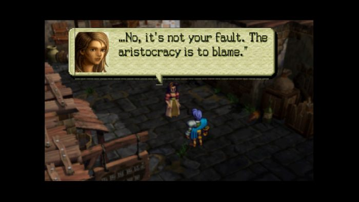
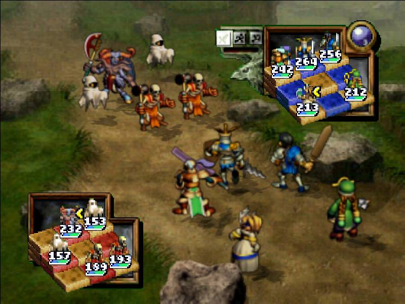
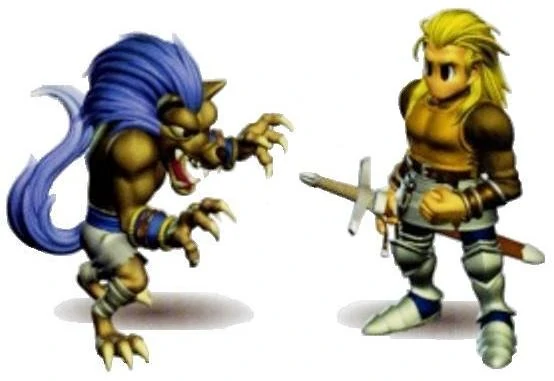
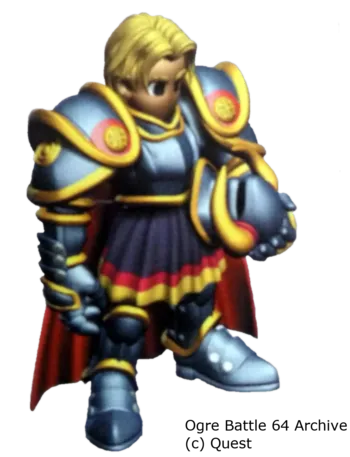
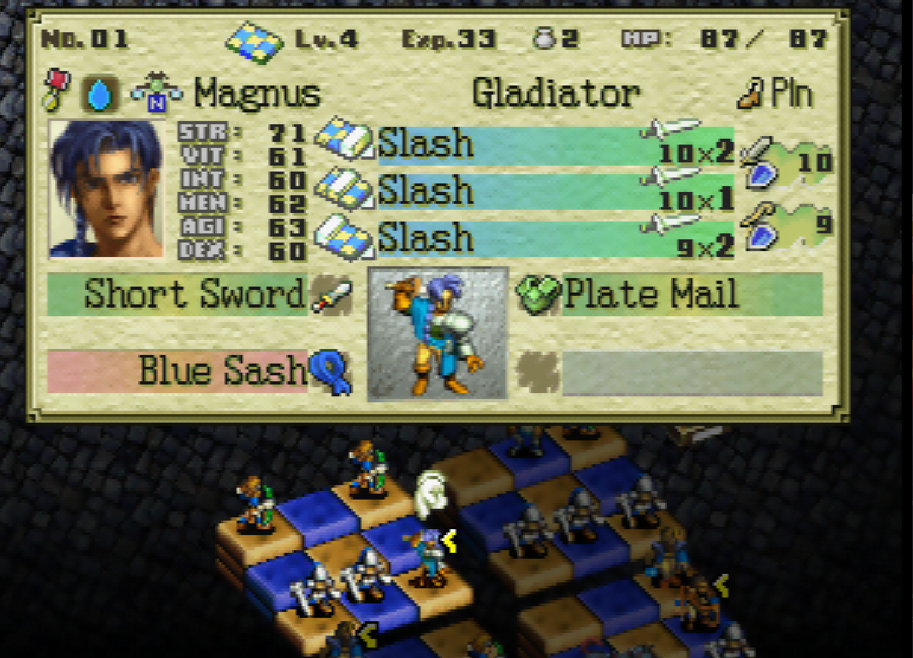

My first ever RPG was Ogre Battle 64. I was fortunate enough as a kid to live near a Blockbuster. I'm not sure if this was a national thing or just at certain locations, but they had something akin to what Gamefly is. You paid a flat price per month and you could have 1 game rental checked out at all times with no restrictions on how often you could switch it out. There were some summers where I would get my mom to take me almost every single day to swap out games.
Rest easy, sweet prince
Ogre Battle 64 was a critical factor in shaping my tastes for both games and the fantasy genre in general. There's nothing else quite like it. It's a cross between an SRPG (like Fire Emblem) and an RTS (like Starcraft). The gamebox itself (back when we didn't have internet to look this stuff up) was what initially drew me in. A flaming dragon on the front, and the back talking about how big of a game it was, complete with images showing knights, mages, combat, and talk of rescuing a prince, how could I not have been interested? I plan to do a separate article at some point about the toys I had as a kid just to emphasize what drew me so much to this game.
Your "units" are actually composed of anywhere from 3-5 characters ranging from standard humanoid classes like knights, archers, clerics, and mages to more exotic classes like dragons, hawkmen, golems, cerberuses (cerberusi?), and even some real weird ones like pumpkinheads, gremlins, and the undead. Yes, your characters can die and come back as zombies or skeletons.
I also have to talk about the story. It starts out with you graduating the officer's academy for the army. The backdrop of the story starts out as a class war. You're tasked with putting down some local rebels of the lower class, but once you start fighting them, you realize that you might be on the wrong side. You pretty quickly join the revolutionary army in order to fight the theocracy. Exactly my type of vibe - big shoutout to this game for giving me a sense of class consciousness in my formative years.

Damn right.
Each mission started with a briefing given by my man Hugo, which included victory conditions, general expectations of what you might encounter during the battle, along with some story beats or words of wisdom.
Thank you strategy grandpa!
Once the mission begins, you have to dispatch all of your units outside of your home base, and send them to towns and strongholds across the map. If one of your units runs into an enemy unit, it starts a battle. A separate screen made of two 9x9 grids loads which is where the combat plays out. Your units and the enemy units take turns hitting each other until everyone has used up all their attacks (or you retreat.)

This is what a battle looks like. Your units are on the bottom.
Generally, the goal was to capture the enemy stronghold or defeat the enemy boss. There are other towns along the way where your units can rest and recover health and stamina. Units either "capture" or "liberate" towns based on their overall unit alignment (chaotic, neutral, or lawful) which would affect your overall alignment rating called "Chaos Frame". Unfortunately, the alignment mechanics were rather complicated and largely obscured from the player. Chaos Frame determined your route and ending but there was no way for you to even see it until the game was already over!
There was considerable player choice in your army composition just due to how many classes there were. The game incentivized using a wide variety of classes so that you could use all of the unique equipment that dropped. Certain monster units wouldn't allow any other units to be in adjacent squares. And, classes would have different attacks depending on where they stood in the formation. In the front, your paladin would do 3 attacks per combat, but in the back row, he would instead cast a healing spell. Long-range units like wizards and archers have the most attacks in the back row, while pumpkinheads would either target one enemy or randomly attack all enemies depending on its position. This also brings additional strategy to making sure you don't get flanked on the combat map, because this would mess up your formation. Units can be attacked from any 4 of the cardinal directions which impacts combat. With some enemies, it might actually be a grave mistake to attack them from behind! So, that added another nice layer of strategy.
Unique characters can be recruited at various points in the campaign. Like many other great games of that era (FF Tactics, Tactics Ogre) Ogre Battle had multiple routes based on choices made during the story, which would impact the characters you could recruit. It led to a lot of replayability...but the Zenobians are the superior route choice. Sorry not sorry, Biske and Carth. You guys aren't worth losing the Zenobians.


Left - Biske. Right - Carth. Both - chumps
I think the character customization and various classes and unit compositions would appeal to anyone who enjoys fiddling with classes in Final Fantasy Tactics. I can spend hours just in the menus switching classes and optimizing equipment, units, and formations.

Get used to staring at this screen. This is where you adjust your unit formations, change classes or equipment and items, or check your alignment.
The music is wonderful and instantly nostalgic for me. Check out the battle theme. Also check out the main melody of the series. While you're at it, just listen to the entire OST. 3 hours worth of tracks for an N64 game which is honestly very impressive.
Additional Resources
It's dangerous to go alone, take this! This is a complex game and you might want some help. Or maybe you realize that Ogre Battle is amazing and you just want to see what some other fans have created:
Ogrebattle64.net - If you're going to play the game, you should absolutely bookmark this one. It has all the guides and information you'll need, along with tons of links to other Ogre Battle content. Big props to Joshua Lindquist for his work on the site, it's truly incredible.
Ogrebattle.weebly.com - Comprehensive fan site that includes lots of information and links to artwork.
CyricZ's walkthrough on Gamefaqs - This was the first guide I used for the game. I used Gamefaqs a lot growing up and to this day CyricZ's guide and walkthrough stands out as one of the most comprehensive I had ever seen.
When I was around 13 or 14, I "borrowed" heavily from the plot of Ogre Battle 64 to satisfy a writing assignment at school. I went to a whack ass private Christian school so the writing prompt was whatever as long as you have a good Christian moral at the end or some shit lol.
If you're still reading at this point, I'm gonna assume you're a fan of the game, and so I've taken the time to transcribe the entire paper for your reading pleasure. I hope you enjoy!
Knights of Zenobia
Once upon a time, there existed two peaceful nations. In the north, was Palatinus. Palatinus was ruled by King Procus III. Within this kingdom, there existed three classes of people; the upper, middle, and lower classes.
In the south, lay Zenobia. Zenobia was ruled by King Theodore. Here, the voice of the people was heard, and there was no class system.
In recent months, Zenobia had seen suspicious activity within Palatinus. The people ignored it, but were now keeping their guard up.
A few hours before, a team of assassins was sent after the king of Zenobia. Before they accomplished their mission, they were slain by the guards. Outraged, King Theodore immediately called for an emergency council...
"Baldwin, what is the status of our messengers?" asked the king. "They still haven't returned. We can only assume the worst," Baldwin replied. "Very well," sighed the king. "Call for Leon the Steadfast. We will send him to Palatinus and get an answer one way or another." "Yes, my king." And with that, Baldwin left.
Baldwin knocked on the door. "Leon?" he called out. "Yes?" Leon replied. "We need you to go to Palatinus and ask the king if they know anything about the assassination attempt on King Theodore." inquired Baldwin. "May I ask why, sir?" Leon asked. "We sent messengers, but they haven't returned. Now, round up your troops and get to it." demanded Baldwin. "Yes, sir!" shouted Leon the Steadfast.
1 day later....
Leon entered the city. He limped towards the palace. He had to warn the king of the coming danger. Leon approached the doors of the palace, but was stopped by the guards. "Out of my way! I have urgent news for the king!" The guards let him run through and he limped towards the throne room. "My king! My king! You have to issue a call to arms!" coughed Leon. "Slow down Leon!" cried the king. "What are you talking about!?"
"I requested an audience with their king, but they denied it. I tried asking again, saying it was urgent. Again, they denied me." As Leon was talking, his voice was sounding raspier and raspier. It sounded as if he was in great pain. "Figuring it was lost, I headed back here." Leon paused to catch his breath. "As my troops and I were heading back, their archers opened fire on us. They killed...all of my men.....and are headed here...now! You must....stop...them...." At that moment, Leon fell to the floor, dead.
King Theodore remained silent. He knew he had to do something, and fast. He thought for a moment, then called to his guards. "Quickly, fetch General Gilbert, Baldwin, and Destin the Valiant!"
All three of the men knelt before the king. "Here's our situation. Palatinus is waging war against us. An unknwo sized force is headed this way right now. Destin, I want you to take your battalion to Palatinus and capture their king. Use force if necessary. Baldwin, Gilbert, I want you to take the rest of the troops and set up defensive positions around the city. Dismissed." The men scattered.
Destin briefed his troops on the mission. They were all ready. After they got all of their equipment, they headed out. Destin and his men moved quickly and quietly through the forests trying to avoid an encounter with the main force.
Meanwhile, Baldwin and Gilbert were busy setting up the defenses. They posted archers along the top of the castle. Swordsmen were posted at all of the city entrances and around buildings. Ambushes and traps were set around the city as well.
The king was worried. He had no idea why Palatinus would be waging war against Zenobia. The only real difference they ever had was the class system. He wondered if it had anything to do with that.
Destin arrived in Palatinus...but, something didn't look right. There was smoke rising from the city, and there was a smell of death in the air. He and his men proceeded cautiously, with their swords drawn. As they walked towards King Procus's castle, they saw many dead bodies on the ground. Several were severely mutilated. Destin was worried. Right then, several ugly, deformed, goblin-like creatures jumped out on his solders.
They were easily dispatched, but Destin was very disgruntled by this. "Could the Palatinean soldiers have summoned demons? No...it couldn't be." he thought to himself. They continued towards the palace, and saw a young boy crawling away from the hideous creatures. Destin the Valiant drew his sword and rushed to slay the creatures and save the boy.
Back at Zenobia, a scout was reporting to General Gilbert. "I spotted the enemy force heading this way. I estimate they'll be here within the hour." "Very well. Dismissed." Gilbert said calmly.
Baldwin was sharpening his sword when the enemy arrived. There were thousands of them. They were outnumbered at least two to one. They were all pouring into the city. Baldwin took a deep breath and charged straight into the enemy ranks. He knew this would be his final battle....
With two quick thrusts, the goblins fell. Destin helped the boy off the ground and asked what had happened. The boy explained how the King of Palatinus did some strange rituals and sacrified his family after the army had left, because the king thought they would need a more powerful force. Goblins and demons then emerged from a void, and started attacking everyone and everything. "We all tried to escape...everyone was running and I hid. I am the only one still alive," the boy whimpered. At that moment, a very loud screech echoed throughout the city. Destin and his men drew their swords.
Many fell under the might of Baldwin; man after man, unit after unit. Eventually, it proved to be too much before him. Baldwin fell to his knees. Hundreds of troops from the Palatinuis army lay on the ground, dead. Baldwin wondered how Destin was doing, then he slumped to the ground.
A legion of goblins, demons and netherworldly creatures surrounded Destin and his troops. Destin dropped to his knees and said a short prayer, then charged forward with the Power of God on his side. His troops followed. The demons didn't stand a chance. They were quickly and easily destroyed. Destin knew he had to head back to Zenobia, and fast.
He arrived to find the battle was already over. Zenobia was still intact, and was victorious. Destin looked for Gilbert to see if any motives of Palatinus were found out. Gilbert reported that several members of the Palatinus army had been captured and interrogated.
All of the enemy troops had said the same thing. King Procus III wanted Zenobia to adopt the class system as well. He was so power hungry that he wanted to take over Zenobia. He was also so desperate that he resorted to using demons to try to get what he wanted.
After the war, General Gilbert retired and settled down on a farm. King Theodore passed away a few years later due to natural causes. The reign of Zenobia was passed to his son, King Theodore II. Destin married, had two children and lived the rest of his life in peace. Memorials were made for Baldwin and Leon the Steadfast. They were remembered as heroes.
With Palatinus in ruins, the demons gone, and no one left to threaten the great kingdom of Zenobia, they all lived happily ever after.